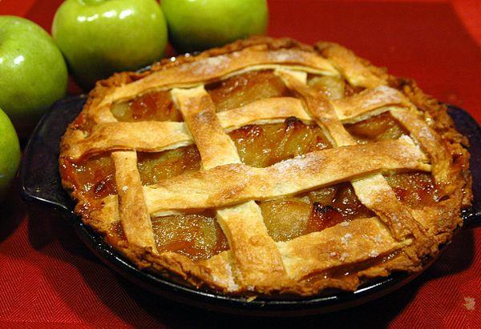

| Ingredient Name |
Amount |
| pie crust |
1 |
| apples |
12 |
| cinamon |
4 tbs |
| vanilla |
2 tbs |
Instructions
- Preheat oven to 450 degrees ferenheit
- Core apples and cut them into sections of desired thickness
- Place chopped apples, vannila, and cinamon in a bowl
- Gently mix ingredients together so that not to bruise that apples
- Add mixture into pie crust and smooth mixture flat
- Bake for 45 minutes
- Remove from oven and let stand for 15 minutes